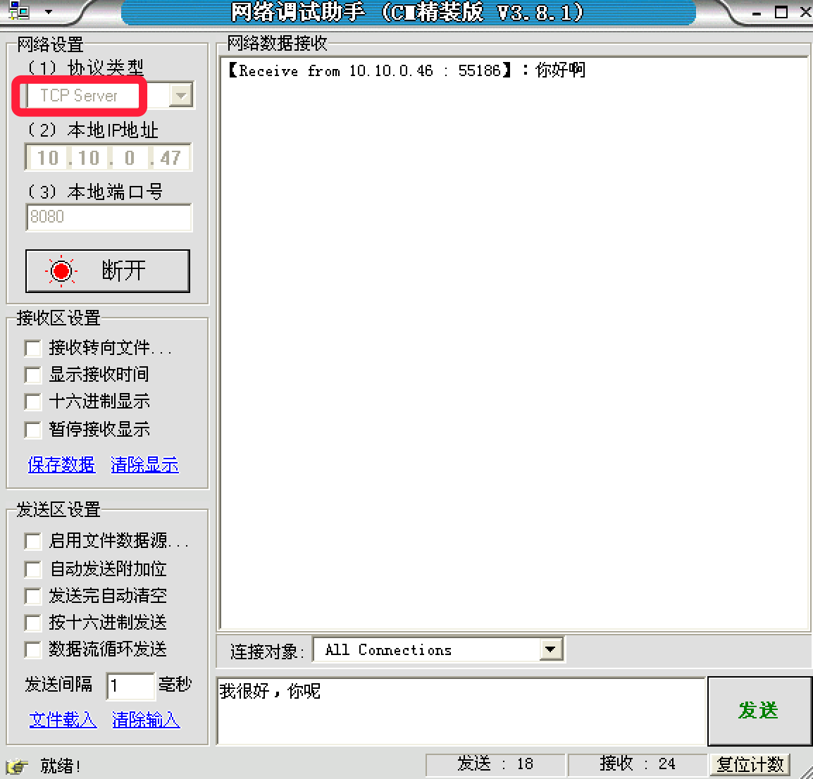

tcp程序-客户端
tcp客户端，并不是像之前一个段子：一个顾客去饭馆吃饭，这个顾客要点菜，就问服务员咱们饭店有客户端么，然后这个服务员非常客气的说道：先生 我们饭店不用客户端，我们直接送到您的餐桌上
如果，不学习网络的知识是不是 说不定也会发生那样的笑话 ，哈哈
所谓的服务器端：就是提供服务的一方，而客户端，就是需要被服务的一方
tcp客户端构建流程
tcp的客户端要比服务器端简单很多，如果说服务器端是需要自己买手机、查手机卡、设置铃声、等待别人打电话流程的话，那么客户端就只需要找一个电话亭，拿起电话拨打即可，流程要少很多
示例代码：
from socket import *
# 创建socket
tcp_client_socket = socket(AF_INET, SOCK_STREAM)
# 目的信息
server_ip = input("请输入服务器ip:")
server_port = int(input("请输入服务器port:"))
# 链接服务器
tcp_client_socket.connect((server_ip, server_port))
# 提示用户输入数据
send_data = input("请输入要发送的数据：")
tcp_client_socket.send(send_data.encode("gbk"))
# 接收对方发送过来的数据，最大接收1024个字节
recvData = tcp_client_socket.recv(1024)
print('接收到的数据为:', recvData.decode('gbk'))
# 关闭套接字
tcp_client_socket.close()
运行流程：
<1>tcp客户端
请输入服务器ip:10.10.0.47
请输入服务器port:8080
请输入要发送的数据：你好啊
接收到的数据为: 我很好，你呢
<2>网络调试助手：

tcp注意点
- tcp服务器一般情况下都需要绑定，否则客户端找不到这个服务器
- tcp客户端一般不绑定，因为是主动链接服务器，所以只要确定好服务器的ip、port等信息就好，本地客户端可以随机
- tcp服务器中通过listen可以将socket创建出来的主动套接字变为被动的，这是做tcp服务器时必须要做的
- 当客户端需要链接服务器时，就需要使用connect进行链接，udp是不需要链接的而是直接发送，但是tcp必须先链接，只有链接成功才能通信
- 当一个tcp客户端连接服务器时，服务器端会有1个新的套接字，这个套接字用来标记这个客户端，单独为这个客户端服务
- listen后的套接字是被动套接字，用来接收新的客户端的链接请求的，而accept返回的新套接字是标记这个新客户端的
- 关闭listen后的套接字意味着被动套接字关闭了，会导致新的客户端不能够链接服务器，但是之前已经链接成功的客户端正常通信。
- 关闭accept返回的套接字意味着这个客户端已经服务完毕
- 当客户端的套接字调用close后，服务器端会recv解堵塞，并且返回的长度为0，因此服务器可以通过返回数据的长度来区别客户端是否已经下线